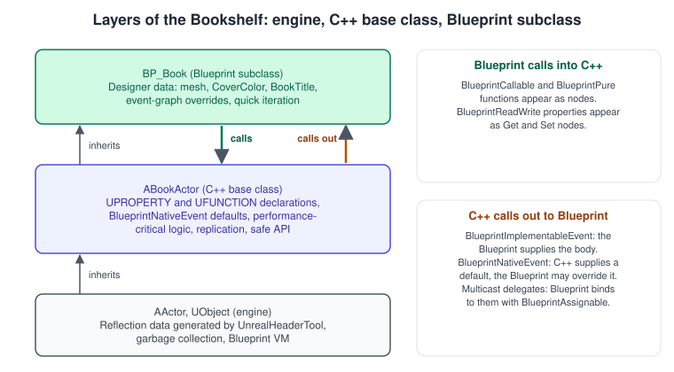
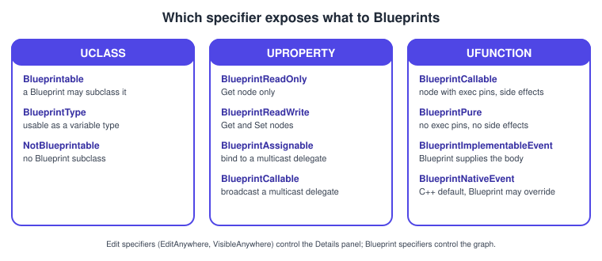
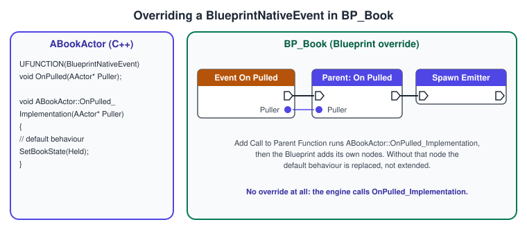
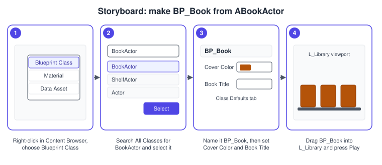

C++ and Blueprints Together
|
This content was generated with the assistance of AI and should be verified against the official documentation before being relied on in production. |
Most Unreal projects are neither "all Blueprint" nor "all C++". Programmers write a small, fast and well-tested set of base classes in C++; designers and artists then build the concrete things on top of them in Blueprint, tune values in the Details panel and wire up art and sound. This page shows how the two halves meet: how C++ is exposed to Blueprint, how C++ calls out to Blueprint, which specifier does what, and when each language is the better tool.
The facts were checked in November 2026 against the Unreal Engine 5.8 documentation (5.8 was released on 2026-06-17; the latest hotfix at the time of writing is 5.8.4). The examples need a C++ project (module Bookshelf, macro BOOKSHELF_API, log category LogBookshelf) built with Visual Studio 2022 17.14 or newer (VS 2026 is recommended) on Windows, Xcode on macOS or clang on Linux; see Installing and Building from Source. The running example is the Bookshelf: ABookActor and AShelfActor in C++, BP_Book and BP_Shelf in Blueprint, both using the shared model bookshelf.glb. The reflection macros themselves are explained in UObject, Reflection and Garbage Collection; the Blueprint editor in Blueprints Visual Scripting; how Blueprints talk to each other in Blueprint Communication.
The layered model

Every Blueprint class has a parent. The parent is either another Blueprint or a C++ class that the reflection system knows about. The usual structure has three layers:
-
The engine (
AActor,UObject): reflection data generated by the Unreal Header Tool (UHT), garbage collection and the Blueprint virtual machine. -
A C++ base class (
ABookActor): declares what exists (components, variables, functions and events) and implements the logic that must be fast, safe or networked. -
A Blueprint subclass (
BP_Book): chooses concrete values (mesh, material, colour, title), fills the extension points (events) and adds one-off behaviour.
Two directions of calls cross the boundary and each has its own mechanism. Blueprint calls into C++ through BlueprintCallable and BlueprintPure functions and through BlueprintReadWrite properties. C++ calls out to Blueprint through BlueprintImplementableEvent and BlueprintNativeEvent functions and through multicast delegates that Blueprints bind to. Nothing else is needed; everything on this page is a variation of those four ideas.
Exposing classes, structs and enums
A C++ class appears in the Blueprint editor only if its UCLASS says so.
-
Blueprintablemakes the class a valid parent for new Blueprints (it appears in the New Blueprint class picker). The specifier is inherited by subclasses. -
BlueprintTypeallows the class to be the type of a Blueprint variable, even when no Blueprint may derive from it. -
NotBlueprintableprevents Blueprint subclasses and overrides aBlueprintableparent.
A struct that Blueprints should use as a variable type, function parameter or return value is declared USTRUCT(BlueprintType); each member that Blueprints may see needs its own UPROPERTY with a Blueprint specifier. An enum is declared UENUM(BlueprintType); the Epic coding standard asks for enum class, and an enum exposed to Blueprints must have the underlying type uint8.
// BookTypes.h
#pragma once
#include "CoreMinimal.h"
#include "BookTypes.generated.h"
/** Outcome of putting a book back on a shelf. */
UENUM(BlueprintType)
enum class EShelveResult : uint8
{
Succeeded UMETA(DisplayName = "Succeeded"),
ShelfFull UMETA(DisplayName = "Shelf Full"),
NotABook UMETA(DisplayName = "Not A Book")
};
/** Numbers that describe one book. Usable as a variable and as a pin in Blueprints. */
USTRUCT(BlueprintType)
struct BOOKSHELF_API FBookStats
{
GENERATED_BODY()
UPROPERTY(EditAnywhere, BlueprintReadWrite, Category = "Bookshelf", meta = (ClampMin = "1", UIMin = "1"))
int32 PageCount = 200;
UPROPERTY(EditAnywhere, BlueprintReadWrite, Category = "Bookshelf")
bool bHardcover = true;
};Exposing properties
A property has two independent concerns: who can edit it in the editor and whether a Blueprint graph can read or write it.
| Specifier | Effect |
|---|---|
|
Editable in property windows on class defaults (the Blueprint’s Class Defaults) and on placed instances. Cannot be combined with a |
|
Editable only on class defaults (archetypes), not on instances in a level. |
|
Editable only on instances placed in a level or spawned with exposed pins, not on the class defaults. |
|
Shown in all property windows but read-only. Used for sub-objects such as components. Cannot be combined with an |
|
Blueprint graphs can read the property (a Get node) but not change it. Incompatible with |
|
Blueprint graphs can read and write it (Get and Set nodes). |
|
On a multicast delegate: Blueprints can bind events to it (Assign, Bind Event). |
|
On a multicast delegate: Blueprints can broadcast it. |
|
The category in the Details panel and in the My Blueprint panel. A vertical bar nests categories, for example |
|
Exposes the property as a pin on the Spawn Actor node for the class. |
|
The minimum and maximum a user may type in the UI of a float or integer property ( |
|
The property is editable only while the named boolean (or expression) is true; a leading exclamation mark inverts the test. |
|
Lets a private member carry a Blueprint specifier. A Blueprint-visible member is normally declared |
|
For object properties: each owner gets its own copy of the assigned object. |
|
Not saved or loaded; zero-filled when loaded. Use it for caches such as a dynamic material instance. |
|
Marks the property for a checkpoint or save system. |
Source: Epic: Properties
Three rules keep Blueprint-facing data healthy. First, expose data, not implementation: a designer needs CoverColor, not a pointer to a helper object. Second, keep components VisibleAnywhere, BlueprintReadOnly: Blueprints may configure a component through its own properties, but must not replace the pointer. Third, give every exposed member a Category, so that the Details panel groups them and Blueprint search finds them.
TSubclassOf is the property type for "any subclass of this C++ class": TSubclassOf<ABookActor> declared with EditDefaultsOnly makes the editor list only ABookActor and its Blueprint children, which is how a shelf is told to spawn BP_Book while its own code only knows ABookActor. Assigning a plain UClass* to it runs a check at run time and gives nullptr if the class does not fit.
Exposing functions
A native function becomes a node when it carries BlueprintCallable or BlueprintPure.
-
BlueprintCallableis a function with side effects. It has white execution pins and runs in graph order. -
BlueprintPureis a function without side effects. It has no execution pins, and the compiler schedules it wherever its output is needed. Aconstfunction marked callable is pure by default;BlueprintPure=falseturns this off. A pure function’s result is not cached, so it is recomputed for every node that uses its output; keep pure functions cheap. -
A reference parameter becomes an output pin by default.
UPARAM(ref)keeps it an input pin, andUPARAM(DisplayName="Pin Name")renames a pin.
| Specifier or metadata | Effect |
|---|---|
|
Runs from Blueprint only on machines with network authority (the server, a dedicated server or single player). |
|
Marks the function as cosmetic: it does not run on dedicated servers. |
|
Adds a button in the Details panel that calls the function on the selected instances in the editor. |
|
The node’s category in the Blueprint context menu; a vertical bar nests it. |
|
Names the parameter that identifies the world. Blueprint fills it automatically from the calling object, and static helpers use it to find the world. |
|
Replaces the generated node name. |
|
Creates one execution output per entry of an enum parameter (the enum needs |
|
Defaults the named object parameter to the calling object; often combined with |
|
For by-reference input parameters: creates a default value when the pin is not connected (common for arrays). |
Source: Epic: UFunctions

Function libraries and the world context
A Blueprint function library is a class derived from UBlueprintFunctionLibrary that holds only static functions: stateless helpers any Blueprint can call without a reference. It is also the standard way to wrap non-UObject C++ code for Blueprint. A static function has no this, so a helper that needs the world takes a const UObject* and names it in WorldContext.
// BookshelfBlueprintLibrary.h
#pragma once
#include "CoreMinimal.h"
#include "Kismet/BlueprintFunctionLibrary.h"
#include "BookshelfBlueprintLibrary.generated.h"
class ABookshelfGameState;
UCLASS()
class BOOKSHELF_API UBookshelfBlueprintLibrary : public UBlueprintFunctionLibrary
{
GENERATED_BODY()
public:
/** Builds the label "3. Moby-Dick" for a shelf slot. */
UFUNCTION(BlueprintPure, Category = "Bookshelf|Text")
static FText FormatBookTitle(FText Title, int32 SlotIndex);
/** The Bookshelf game state of the world that WorldContextObject lives in, or nullptr. */
UFUNCTION(BlueprintPure, Category = "Bookshelf|Game", meta = (WorldContext = "WorldContextObject"))
static ABookshelfGameState* GetBookshelfGameState(const UObject* WorldContextObject);
};// BookshelfBlueprintLibrary.cpp
#include "BookshelfBlueprintLibrary.h"
#include "BookshelfGameState.h"
#include "Kismet/GameplayStatics.h"
#define LOCTEXT_NAMESPACE "Bookshelf"
FText UBookshelfBlueprintLibrary::FormatBookTitle(FText Title, int32 SlotIndex)
{
return FText::Format(LOCTEXT("BookLabel", "{0}. {1}"), FText::AsNumber(SlotIndex + 1), Title);
}
ABookshelfGameState* UBookshelfBlueprintLibrary::GetBookshelfGameState(const UObject* WorldContextObject)
{
return Cast<ABookshelfGameState>(UGameplayStatics::GetGameState(WorldContextObject));
}
#undef LOCTEXT_NAMESPACESource: Epic: Blueprint Function Libraries and Epic: UFunctions
Several execution outputs from one function
ExpandEnumAsExecs turns an enum output into branches, so the Blueprint graph reads like a switch with no extra node. The shelf below returns an EShelveResult that appears as three white pins. The code also shows the C++ base class creating its books from a TSubclassOf that the designer sets in BP_Shelf.
// ShelfActor.h
#pragma once
#include "CoreMinimal.h"
#include "GameFramework/Actor.h"
#include "BookTypes.h"
#include "ShelfActor.generated.h"
class ABookActor;
class UStaticMeshComponent;
UCLASS(Blueprintable)
class BOOKSHELF_API AShelfActor : public AActor
{
GENERATED_BODY()
public:
AShelfActor();
/** Puts the book into the next free socket. Three execution pins appear, one per result. */
UFUNCTION(BlueprintCallable, Category = "Bookshelf|Shelf", meta = (ExpandEnumAsExecs = "Result"))
void TryShelve(ABookActor* Book, EShelveResult& Result);
protected:
virtual void BeginPlay() override;
/** The Blueprint subclass of ABookActor to fill the shelf with; chosen in BP_Shelf. */
UPROPERTY(EditDefaultsOnly, BlueprintReadOnly, Category = "Bookshelf|Shelf")
TSubclassOf<ABookActor> BookClass;
UPROPERTY(EditDefaultsOnly, BlueprintReadOnly, Category = "Bookshelf|Shelf", meta = (ClampMin = "0"))
int32 SlotCount = 8;
UPROPERTY(VisibleAnywhere, BlueprintReadOnly, Category = "Bookshelf|Shelf")
TObjectPtr<UStaticMeshComponent> ShelfMesh;
private:
FName GetSlotName(int32 SlotIndex) const;
int32 NextFreeSlot = 0;
};// ShelfActor.cpp
#include "ShelfActor.h"
#include "BookActor.h"
#include "Components/StaticMeshComponent.h"
#include "Engine/World.h"
#include "Bookshelf.h"
AShelfActor::AShelfActor()
{
PrimaryActorTick.bCanEverTick = false;
ShelfMesh = CreateDefaultSubobject<UStaticMeshComponent>(TEXT("ShelfMesh"));
SetRootComponent(ShelfMesh);
}
FName AShelfActor::GetSlotName(int32 SlotIndex) const
{
return FName(*FString::Printf(TEXT("BookSlot_%d"), SlotIndex));
}
void AShelfActor::BeginPlay()
{
Super::BeginPlay();
if (!BookClass)
{
UE_LOG(LogBookshelf, Warning, TEXT("%s has no BookClass; set it in the Blueprint subclass."), *GetName());
return;
}
FActorSpawnParameters SpawnParams;
SpawnParams.Owner = this;
SpawnParams.SpawnCollisionHandlingOverride = ESpawnActorCollisionHandlingMethod::AlwaysSpawn;
for (int32 Index = 0; Index < SlotCount; ++Index)
{
const FTransform SlotTransform = ShelfMesh->GetSocketTransform(GetSlotName(Index));
if (ABookActor* Book = GetWorld()->SpawnActor<ABookActor>(BookClass, SlotTransform, SpawnParams))
{
EShelveResult Result;
TryShelve(Book, Result);
}
}
}
void AShelfActor::TryShelve(ABookActor* Book, EShelveResult& Result)
{
if (!IsValid(Book))
{
Result = EShelveResult::NotABook;
return;
}
if (NextFreeSlot >= SlotCount)
{
Result = EShelveResult::ShelfFull;
return;
}
Book->AttachToComponent(ShelfMesh, FAttachmentTransformRules::SnapToTargetNotIncludingScale, GetSlotName(NextFreeSlot));
++NextFreeSlot;
Result = EShelveResult::Succeeded;
}Calling out to Blueprint: events
A C++ base class often needs "something the designer fills in". Two specifiers cover it.
-
BlueprintImplementableEventworks like a virtual function that only a Blueprint can implement. There is no C++ body, and if no Blueprint implements it the call does nothing. A function with no return value and no output parameters appears as an event that you add by right-clicking in the event graph. One with a return value or outputs appears in My Blueprint and you choose to implement it as a function. -
BlueprintNativeEventis the same with a C++ default. UHT generates a function with the suffix_Implementationthat holds your default, and the plain name dispatches to a Blueprint override if there is one. An override calls the default by right-clicking the entry node and choosing Add Call to Parent Function.
Epic notes that a BlueprintNativeEvent costs more than a BlueprintImplementableEvent, so use it only where a real default is needed.

Both kinds of event are public API of the base class: renaming one breaks every Blueprint that overrides it. Name them for the moment they mark (OnPulled, OnCoverColorChanged), not for what a Blueprint is expected to do.
The base class: ABookActor
The class below is the C++ half of the Bookshelf book. It shows every mechanism of this page in one place: components and values exposed with the right specifiers, an OnConstruction that applies the cover colour (the C++ counterpart of a Blueprint construction script, so that the editor viewport updates when the designer changes CoverColor), a callable setter, a native event with a default, an implementable event, a pure helper and a delegate. It also implements the IBookInteractable interface and owns the OnBookPulled dispatcher described in Blueprint Communication.
// BookActor.h
#pragma once
#include "CoreMinimal.h"
#include "GameFramework/Actor.h"
#include "BookInteractable.h"
#include "BookTypes.h"
#include "BookActor.generated.h"
class ABookActor;
class UMaterialInstanceDynamic;
class URotatingMovementComponent;
class UStaticMeshComponent;
DECLARE_DYNAMIC_MULTICAST_DELEGATE_OneParam(FOnBookPulled, ABookActor*, Book);
UCLASS(Blueprintable)
class BOOKSHELF_API ABookActor : public AActor, public IBookInteractable
{
GENERATED_BODY()
public:
ABookActor();
virtual void OnConstruction(const FTransform& Transform) override;
// IBookInteractable
virtual bool Interact_Implementation(AActor* Instigator) override;
/** Changes the cover colour at run time and tells Blueprints. */
UFUNCTION(BlueprintCallable, Category = "Bookshelf|Book")
void SetCoverColor(FLinearColor NewColor);
/** The title with the shelf-neutral formatting rules applied. Pure: no side effects. */
UFUNCTION(BlueprintPure, Category = "Bookshelf|Book")
FText GetDisplayTitle() const;
/** Called when a character pulls the book. The default starts the book spinning. */
UFUNCTION(BlueprintNativeEvent, Category = "Bookshelf|Book")
void OnPulled(AActor* Puller);
/** Called after the cover colour changed. Blueprint only: play a sparkle, change a decal. */
UFUNCTION(BlueprintImplementableEvent, Category = "Bookshelf|Book")
void OnCoverColorChanged(FLinearColor NewColor);
/** Blueprints bind to this with Assign or Bind Event. */
UPROPERTY(BlueprintAssignable, Category = "Bookshelf|Events")
FOnBookPulled OnBookPulled;
protected:
UPROPERTY(VisibleAnywhere, BlueprintReadOnly, Category = "Bookshelf|Components")
TObjectPtr<UStaticMeshComponent> Mesh;
UPROPERTY(VisibleAnywhere, BlueprintReadOnly, Category = "Bookshelf|Components")
TObjectPtr<URotatingMovementComponent> RotatingMovement;
UPROPERTY(EditAnywhere, BlueprintReadOnly, Category = "Bookshelf|Book")
FLinearColor CoverColor = FLinearColor(0.35f, 0.12f, 0.08f, 1.0f);
UPROPERTY(EditAnywhere, BlueprintReadWrite, Category = "Bookshelf|Book")
FText BookTitle;
UPROPERTY(EditAnywhere, BlueprintReadWrite, Category = "Bookshelf|Book")
FBookStats Stats;
private:
void ApplyCoverColor();
/** Runtime-only cache of the material instance that carries CoverColor. */
UPROPERTY(Transient)
TObjectPtr<UMaterialInstanceDynamic> CoverMaterial;
};// BookActor.cpp
#include "BookActor.h"
#include "Components/StaticMeshComponent.h"
#include "GameFramework/RotatingMovementComponent.h"
#include "Materials/MaterialInstanceDynamic.h"
#include "Bookshelf.h"
ABookActor::ABookActor()
{
PrimaryActorTick.bCanEverTick = false;
Mesh = CreateDefaultSubobject<UStaticMeshComponent>(TEXT("Mesh"));
SetRootComponent(Mesh);
RotatingMovement = CreateDefaultSubobject<URotatingMovementComponent>(TEXT("RotatingMovement"));
RotatingMovement->RotationRate = FRotator(0.0, 45.0, 0.0);
RotatingMovement->bAutoActivate = false;
}
void ABookActor::OnConstruction(const FTransform& Transform)
{
Super::OnConstruction(Transform);
ApplyCoverColor();
}
void ABookActor::ApplyCoverColor()
{
static const FName CoverColorParameter(TEXT("CoverColor"));
if (!IsValid(Mesh))
{
return;
}
if (!CoverMaterial)
{
CoverMaterial = Mesh->CreateDynamicMaterialInstance(0);
}
if (CoverMaterial)
{
CoverMaterial->SetVectorParameterValue(CoverColorParameter, CoverColor);
}
}
void ABookActor::SetCoverColor(FLinearColor NewColor)
{
CoverColor = NewColor;
ApplyCoverColor();
OnCoverColorChanged(CoverColor);
}
FText ABookActor::GetDisplayTitle() const
{
return BookTitle.IsEmpty() ? FText::FromString(TEXT("Untitled")) : BookTitle;
}
void ABookActor::OnPulled_Implementation(AActor* Puller)
{
RotatingMovement->Activate();
}
bool ABookActor::Interact_Implementation(AActor* Instigator)
{
if (!IsValid(Instigator))
{
return false;
}
UE_LOG(LogBookshelf, Log, TEXT("%s pulled by %s"), *GetName(), *Instigator->GetName());
OnPulled(Instigator);
OnBookPulled.Broadcast(this);
return true;
}Three details deserve attention. The constructor creates components and sets simple defaults but does not load assets: the mesh and the material (M_Book, with a vector parameter named CoverColor, and its instance MI_Book_Leather) are chosen in the BP_Book class defaults, which keeps hard-coded asset paths out of C++ and lets an artist swap them. CoverMaterial is Transient because a dynamic material instance is created at run time and must not be saved. And OnPulled is called from Interact_Implementation through its plain name, which is the generated dispatcher that finds a Blueprint override first.
Procedure: make BP_Book from ABookActor
The designer’s half of the work takes a minute. The steps match the storyboard.
-
In the Content Browser, right-click and choose Blueprint Class.
-
In the class picker open All Classes, search for
BookActorand select it. Only classes markedBlueprintableare listed. -
Name the Blueprint
BP_Book, open it and select Class Defaults. Set the mesh on the Mesh component,Cover ColorandBook Titlein the Bookshelf|Book category. In the Components tab choose the book mesh from bookshelf.glb once it is imported. -
Optionally open the event graph, add
Event On Pulledand use Add Call to Parent Function to keep the spinning default, then add a sound or a particle burst. -
Drag
BP_Bookinto the levelL_Library, or set it asBookClassinBP_Shelf, and press Play.

When to use which
Neither language is better in general; each is cheaper for different work.
| Concern | Prefer C++ | Prefer Blueprint |
|---|---|---|
Data and tuning |
Declaring the variables, their ranges and categories. |
Setting concrete values, per-asset variations, art and audio references. |
Logic |
Algorithms, loops over many elements, math, anything that runs every frame, networking and replication, anything with unit tests. |
Glue between systems, one-off level or gameplay scripting, prototypes, short event reactions. |
Structure |
Base classes, interfaces, subsystems, shared libraries, anything several Blueprints derive from or call. |
Concrete subclasses, level-specific actors, UI layout and animation (see UMG, Slate and CommonUI). |
Team workflow |
Reviewable text, merge-friendly diffs, searchable in the IDE. |
Fast iteration without compiling, designer ownership, visual debugging with breakpoints. |
Risk |
Compile errors are caught before the editor runs, but a crash can take the editor down. |
Errors show at compile or run time inside the editor and are rarely fatal, but large graphs are hard to diff and merge. |
A reliable pattern: write the C++ base class first with data, events and the heavy functions, expose only what a designer must touch, then let Blueprint subclasses add behaviour. When a Blueprint graph grows into a long, hot or networked algorithm, move that part into a C++ function and call it from the graph as a node.
Renaming and moving exposed members
A Blueprint stores the names of the C++ functions, properties and classes it uses. Renaming one in code and recompiling orphans every asset that referenced it. Core redirects in DefaultEngine.ini map old names to new ones when assets load. Class names are written as reflection sees them, without the prefix letter (ABookActor is BookActor).
[CoreRedirects]
+PropertyRedirects=(OldName="/Script/Bookshelf.BookActor.Title",NewName="/Script/Bookshelf.BookActor.BookTitle")
+FunctionRedirects=(OldName="/Script/Bookshelf.BookActor.OnPulledByPlayer",NewName="/Script/Bookshelf.BookActor.OnPulled")
+ClassRedirects=(OldName="/Script/Bookshelf.OldBook",NewName="/Script/Bookshelf.BookActor")Once every asset has been resaved with the new names the redirect can be removed. The reverse move, a Blueprint class that becomes a native class, uses a class redirect with OverrideClassName set to /Script/CoreUObject.Class.
Source: Epic: Core Redirects
Common mistakes
-
Forgetting
Blueprintable. The C++ class does not appear in the New Blueprint picker. -
A Blueprint specifier with no
Category. The member lands in a default category and is hard to find; every Blueprint-facing member should name one. -
Marking an expensive function
BlueprintPure. A pure node is re-evaluated for every node that reads its output, including inside loops, so a search or a copy runs many times. Make itBlueprintCallableand store the result in a variable. -
Side effects in a pure function. The compiler may run it zero, one or many times and at any point before its consumers.
-
Expecting a reference parameter to stay an input. It becomes an output pin unless it is
UPARAM(ref). -
Changing a
BlueprintNativeEventsignature. Existing Blueprint overrides stop matching; use a core redirect for names and re-create overrides for signatures. -
Calling
Supermentally in Blueprint. A Blueprint override of a native event replaces the default unless it uses Add Call to Parent Function. -
Using
BlueprintReadWriteon a component pointer. A Blueprint can then swap the pointer and break C++ that assumes the component exists. UseVisibleAnywhere, BlueprintReadOnly. -
Hard-coding asset paths in constructors with
ConstructorHelpers. They move or rename and then fail at load. Prefer defaults set in the Blueprint subclass, or soft references (see Data-Driven Gameplay). -
Editing reflected declarations while Live Coding is running. Adding or changing
UPROPERTYandUFUNCTIONdeclarations is the case where Live Coding is least reliable. When the editor behaves oddly after such a change, close it and build the module from the IDE. -
Giving
AllowPrivateAccessas a shortcut for everything. Exposing private state to Blueprint defeats the point of keeping it private; expose a function instead.
Performance notes
-
Blueprint graphs run in a virtual machine. A call across the boundary (Blueprint to C++ or back) has a fixed overhead per call, and a node-by-node loop over thousands of elements is slower than the same loop written once in C++. Move loops, math and per-frame work to C++ and expose a single function.
-
Epic states that a
BlueprintNativeEventcosts more than aBlueprintImplementableEvent. Call a native event rarely (once per pull, not per frame); if a function is called per frame, make it a normal C++ function and let the Blueprint react to state changes with a delegate. -
Disable ticking you do not need:
PrimaryActorTick.bCanEverTick = falsein the C++ constructor and an empty eventTickin no Blueprint. A BlueprintEvent Tickcosts a VM entry each frame for every instance. -
Pure functions are recomputed per use. Cache expensive results in a variable.
-
Use Unreal Insights and the stat commands (see Profiling and Optimization) to see where time goes before moving anything to C++; most Blueprint code is not on the hot path.
-
Blueprint nativization is no longer available (see below), so a Blueprint cannot be converted to C++ automatically.
What changed recently
| Version | Change |
|---|---|
UE 5.0 (2022) |
Blueprint nativization was removed. |
UE 5.8 (2026) |
UHT now accepts patterns such as |
Where the books are outdated
Three books cover mixing C++ and Blueprints: Unreal Engine 5 Game Development with C++ Scripting (Zhenyu George Li and E. Wyn Roberts, Packt, August 2023; chapters 6 and 7), Unreal Engine 4.X By Example (Benjamin Carnall, Packt, July 2016; chapters 5 and 6) and Unreal Engine: Game Development from A to Z (Joanna Lee, John P. Doran and Nitish Misra, Packt, August 2016; module 2, chapter 9). The first targets UE 5.0 and Visual Studio 2022; the other two target UE 4.7 to 4.11.
| Book and chapter | What the book shows | What is current in UE 5.8 |
|---|---|---|
CAR ch. 6 and 9 |
|
|
CAR, ATZ M2-9 |
Hot Reload and a Visual Studio 2013 or 2015 toolchain |
Live Coding, with Visual Studio 2026 recommended and 2022 17.14 as the minimum. |
CAR and ATZ (UE 4.x) |
Assets found in the constructor with |
Defaults set in a Blueprint subclass, or soft references; the C++ constructor stays free of asset paths. |
LIR ch. 6 and 7, CAR ch. 5 |
Input bound with |
Enhanced Input, covered on Enhanced Input. LIR is written for UE 5.0 and predates Enhanced Input as the default. |
ATZ M2-9, CAR ch. 5 |
Blueprint nativization as a speed-up for shipped Blueprints (in UE 4 projects) |
Removed in UE 5.0; hot Blueprint logic is moved to C++ by hand. |
See also
-
Blueprint Communication: interfaces, casting and dispatchers between objects.
-
Blueprints Visual Scripting: the editor side of the same classes.
-
UObject, Reflection and Garbage Collection: what
UCLASS,UPROPERTYandUFUNCTIONgenerate. -
Unreal C++ Idioms: naming, containers, delegates, logging and asserts used in the examples.
-
Actors and Components: the lifecycle that
OnConstructionandBeginPlaybelong to. -
Project Structure and Modules: the
Bookshelfmodule and itsBuild.cs. -
Data-Driven Gameplay: soft references and data assets as an alternative to hard-coded values.
-
Unity: C# Scripting and the MonoBehaviour Lifecycle: the equivalent of a base class with a designer-facing Inspector.
-
C# attributes and reflection: the C# counterpart of Unreal’s reflection macros.
-
C++ classes and objects: the language features the base classes rely on.